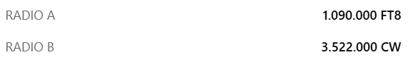

14.090 ft8 and 3522 CW...
I'm copying PR and Ecuador on 20; but not them so they either quit or they're simply not loud.
73,
Rick nk7i
I got a solid -9 decode on 20 M and Clublog shows three contacts. I have not seen more decodes. Their sites shows they are on 1.09 MHz and 80 M CW. A little off.

Whatever. No copy here now.Al N6TA
_______________________________________________ Chat mailing list Chat@ncdxc.org http://mail.ncdxc.org/mailman/listinfo/chat_ncdxc.org